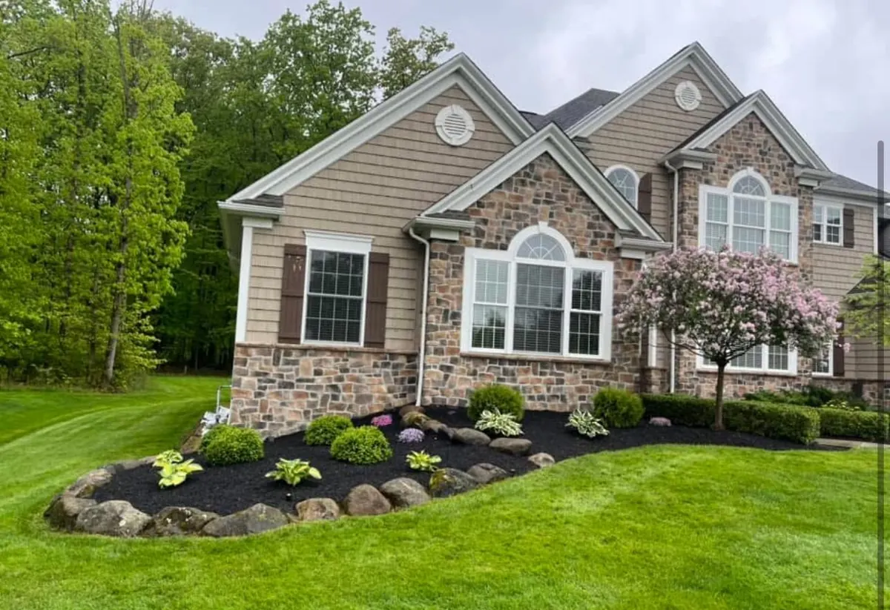

Winter burn, salt spray, snow load, and hungry deer — what actually damages landscaping here, and the short list of steps that prevents most of it.

Every April we get the same calls from Chagrin Falls, Bainbridge, and Aurora: the boxwoods by the front door are bronze, one side of the arborvitae hedge is brown, and a young maple has a long vertical crack down its trunk. Almost none of that happened in April. It happened in January and February, and most of it was preventable in November.
Here is what Northeast Ohio winters actually do to landscape plants, and what is worth doing about it.
Evergreens keep losing water through their leaves and needles all winter. When the ground is frozen solid, the roots cannot replace it. Add a bright sunny day after a cold snap, or a steady northwest wind off Lake Erie, and the foliage dries out and browns. Boxwood, yews, rhododendrons, hollies, and arborvitae on exposed corners take the worst of it.
Plants within about 30 feet of Route 306, Route 43, Route 422, or any well-salted road get coated in salt spray from passing traffic. The street side browns while the house side stays green. Closer to home, plowed and shoveled snow full of rock salt gets piled on foundation beds, and the salt soaks into the root zone as it melts.
Lake-effect snow in Geauga County is often wet and heavy, and an ice storm can add serious weight in an afternoon. Multi-stem arborvitae splay open and never fully close back up. Brittle branches on upright junipers and young ornamental trees snap.
Once the snow covers everything else, deer browse arborvitae, yews, and hostas down to stubs — Auburn and Bainbridge properties near open woods get hit hardest. Rabbits girdle young shrubs at snow height, and voles chew bark under the snow line where you cannot see it until spring.
This is the single most effective step and the most skipped. A plant that goes into winter fully hydrated resists burn far better. If fall has been dry, give new plantings and evergreens a long, slow soak every week or two until the ground freezes. Our clay soil holds water well once it is in — the trick is soaking slowly so it does not run off.
Two to three inches of shredded hardwood mulch over the root zone insulates against the freeze-thaw cycles that heave shallow-rooted plants out of clay. Pull it back a few inches from trunks and stems — mulch piled against bark is where voles nest and bark rots.
Wax-based anti-desiccant sprays coat foliage to slow moisture loss. Research on how well they work is mixed, but many landscapers find them worthwhile on broadleaf evergreens in exposed spots. Apply on a dry day when it is above 40°F, typically late November or early December, and follow the label.
Brown foliage in March does not always mean a dead plant. Scratch a twig with your thumbnail; green underneath means it is alive. Wait until late May before pruning out damage, since many evergreens push new growth from the same branches. Flush salt from beds along the driveway with a few deep waterings once the ground thaws.
If a plant keeps burning year after year in the same spot, the honest answer is often to replace it with something better suited to that exposure. Our deer-resistant plant guide for Geauga County is a good starting point.
Late November to early December, once the ground has started to freeze. Putting it up in October traps warmth and moisture while plants are still active. Take it down in late March or early April once hard freezes are mostly done.
No. A tight wrap holds moisture against the foliage and can encourage disease. Build a burlap screen on stakes a few inches away on the windward or road side, or loosely tie the branches upright with soft twine to prevent snow from splaying them.
Brush fresh, fluffy snow off with an upward sweep of a broom while it is light. Do not whack branches or try to break off ice. Frozen branches are brittle and snap, so let ice melt off naturally.
Usually winter burn. Sun and wind pull moisture from the needles while the roots sit in frozen ground and cannot replace it. Salt spray along roads causes similar browning on the street side. Wait until late spring before pruning; many plants push new growth from the same branches.
Our late-fall cleanups in Aurora, Chagrin Falls, Bainbridge, South Russell, and Auburn include cutbacks, fresh mulch, and shrub protection where it is needed.
Get a Free Estimate